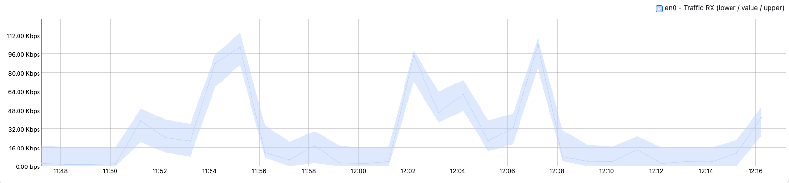
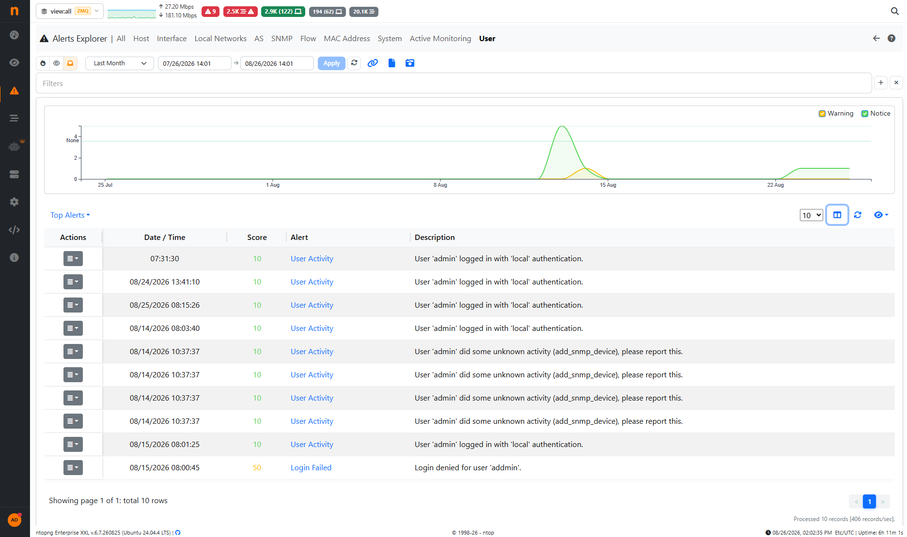

Оповещения
ntopng генерирует оповещения, сообщающие о возникновении событий и пороговых значениях, настраиваемых пользователем. За генерацию большинства предупреждений отвечают бахавиальные проверки. Включение и отключение проверки включает или отключает соответствующие оповещения. Некоторые системные оповещения не генерируются при проверке и всегда включены (см. Всегда включенные системные оповещения).
Оповещения включают, помимо прочего:
Обнаружение нового устройства
Изменение статуса порта коммутатора, обнаруженное через SNMP
Контакт с хостом вредоносного ПО
Действия пользователя
Некоторые оповещения можно настроить. Например, оповещения могут срабатывать при пересечении определенных настраиваемых пользователем пороговых значений. Как только ntopng обнаруживает превышение определенного порога, он немедленно запускает соответствующее предупреждение.
Примеры пороговых значений включают в себя:
«Трафик, генерируемый хостом, падает ниже определенного порога»
«Количество SYN, отправленных хостом, превышает определенное число, поэтому он считается сканером»
«Отбрасывание пакетов интерфейса превышает заданный процент от общего количества отслеживаемых пакетов»
«Общий трафик, исходящий из сети, превышает определенный порог»
Проверки ntopng выполняют оценку пороговых значений периодически, через заранее определенные интервалы времени.
Оповещения, связанные с порогом, имеют продолжительность, то есть они активны в течение определенного периода времени. Этот период времени начинается с момента первого достижения порогового значения и заканчивается, когда пороговое значение больше не достигается. По этой причине такие предупреждения называются помолвлен или прошлое, в зависимости от того, достигнут ли порог срабатывания или нет.
Поведенческие оповещения

Предупреждение о непредвиденном поведении сетевого интерфейса
В отличие от других семейств предупреждений, обычно основанных на статическом пороге или проверке, поведенческие проверки имеют возможность обучаться с течением времени и динамически изменять свой порог.
Это достигается за счет использования одного из трех алгоритмов прогнозирования, разработанных nDPI: простое экспоненциальное сглаживание, двойное экспоненциальное сглаживание, тройное экспоненциальное сглаживание (алгоритм Холта-Винтерса).
Эти алгоритмы способны предвидеть будущее и давать прогноз анализируемого значения. На основании этого прогнозируемого значения срабатывает оповещение.
Предупреждение срабатывает только в том случае, если реальное значение меньше или больше определенных пороговых значений, которые рассчитывает nDPI (оно дает нижнюю и верхнюю границу).
Примечание
Оповещения о поведении доступны только при наличии лицензии ntopng Enterprise L.

Таймсерия сетевого интерфейса с неожиданным поведением
Действия пользователя
ntopng отслеживает действия пользователей, связанные с управлением системой и безопасностью, сохраняя их в виде оповещений. Эти мероприятия включают в себя:
Управление пользователями: добавление или удаление пользователя, изменение пароля.
Живой трафик загружен
Извлечение трафика (живое или PCAP загруженное)
Хост JSON загружен
Данные о потоках загружены
Изменения настроек оповещений: оповещения отключены или включены, данные оповещений удалены.
Неудачные или успешные входы в систему
Запись трафика включена или отключена
Данные хостов/интерфейсов удалены.
SNMP устройство добавлено или удалено
Действия пользователя доступны в Системный интерфейс, под Прошлые оповещения страница:

Страница прошлых оповещений с действиями пользователей
Серьезность
Оповещения о событиях и пороговых значениях всегда связаны с уровнем серьезности, указывающим на важность такого события. Например, контакт хоста, занесенного в черный список, выделяется значком предупреждение, тогда как порог, пересеченный хостом, выделяется значком ошибка. В настоящее время доступны уровни серьезности, определенные в RFC 3164, а именно:
Чрезвычайная ситуация: система непригодна для использования
Критический: критические условия
Ошибка: условия ошибки
Предупреждение: условия предупреждения
Уведомление: нормальное, но значимое состояние
Сущности
Каждое оповещение имеет сущность (субъект, для которого создано оповещение). Список объектов, поддерживаемых ntopng:
Хозяин: IP-адрес уровня 3.
Интерфейс: контролируемый интерфейс ntopng
Сеть: ntopng локальная сеть
SNMP устройство: устройство добавлено в ntopng со страницы SNMP.
SNMP интерфейс устройства: устройство добавлено в ntopng со страницы SNMP.
Поток: контролируемый поток
MAC-адрес: Mac-адрес уровня 2
Хост-пул: пул хостов, созданный пользователем.
Процесс: сам процесс ntopng
Пользователь: пользователь ntopng GUI
Например, оповещение сработало для хоста 192.168.1.2 который превысил порог трафика, будет иметь "хозяин" как сущность и «192.168.1.2” как ценность сущности. Аналогично, сеть 192.168.2.0/24 который превысил порог трафика, будет иметь "сеть«как сущность и “192.168.2.0/24” как ценность сущности.
Объекты не отображаются при просмотре страниц предупреждений ntopng, поскольку они понятны из контекста и предупреждающих сообщений. Понимание того, как работают сущности, может быть полезно при распространении оповещений на сторонние конечные точки, такие как syslog.
Тип
Полный список оповещений доступен в разделе «Настройки» на странице Поведенческие проверки, за исключением Всегда включенные системные оповещения.

Получатели
Оповещения доступны не только в сети ntopng GUI, они также могут распространяться за пределы сети с использованием получателей, включая почту, Slack и syslog. Чтобы просмотреть детали конфигурации, необходимые для использования получателей, см. Доставка оповещений получателям.
Обозреватель оповещений
ntopng имеет встроенный обозреватель оповещений для навигации и анализа оповещений. Для получения дополнительной информации прочтите Обозреватель оповещений раздел.

Обозреватель оповещений